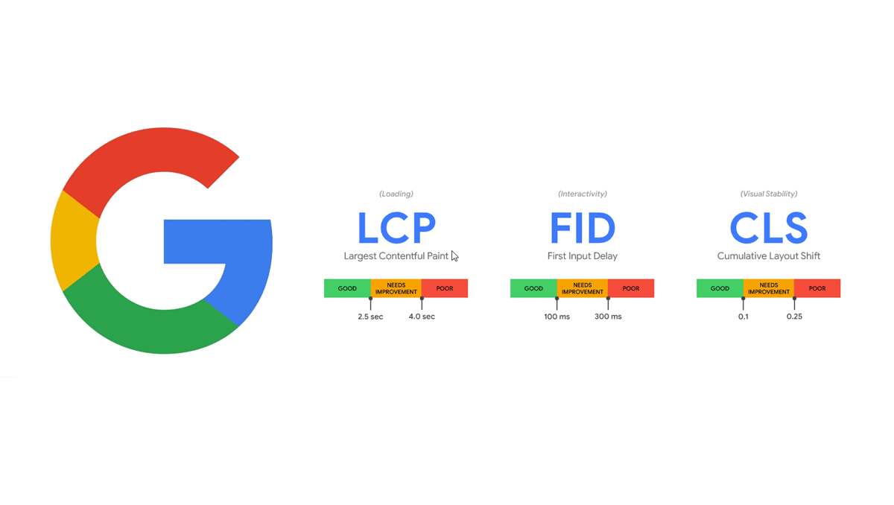

This update is still an opportunity


I Was listening to the podcast Pivot t and heard professor Scott Galloway telling this story as an investor and board member of About.com and the experience they got when Google made an update to their search algorithm making about.com lose a huge part of organic traffic they were getting from this search engine. Hours after I was watching the masterclass of Malcolm Gladwell and heard him telling how he think about how bad google was because it is good at confirming what we already and what everyone agreed about and to know more about this issue that all search engines and recommendation engines share in common which is the confirmation bias you could read these books but what Malcolm reminded me was this coming google update that will be very disruptive for many businesses based on organic traffic coming from its search engine.
A year ago, I was working on this update trying to build a solution for those who will face it and this work was at an advanced stage when I shelved it for going into book publishing with book dojo. Hopefully, for me, the update has been postponed or rolled out in small increments giving me still time to work on it and finish the solution that I had in mind. JS Third-party services are the main issues to tackle for those who would surf quietly the wave of this update. Days ago, I heard that this google update is coming and the conversation that I had with this young hackathoner who was advising me to sell my cheap and bad articles was like an insight to tell me that it’s time to work and ship this solution that will help online businesses based on organic traffic to face this google update safely. Sincerely I got a year ago an invitation from a Google’s team member that were charged to collect tools that are built for helping website owners to face this new update and there were some ten solutions that were registered in this list that I got from this Google’s team member and mine could be part of it.
Then let’s work on this coming update and see if it will be a successful bet and with this project, I even don’t need responsiveness or mobile development because it is sure that the target audience of the solution to be built is desktop driven and it has been a long time that I think that it is better to launch an online business with desktop being the main medium.
When you have an inspection from a top hierarchical entity of from you could everything that could make this inspector rate you badly until it finishes his inspection to bring them back who knows this could also work for this google update because startups like StackExchange had shown google search engines content that made them rank while hiding you this pieces of information that were for sale but the best solution is a durable and consistent solution that target directly the problem without tricking. This was the type of solution I was trying to implement even if I had a clear insight about how to make a search algorithm judge your web page as CVW compliant while it is not.
PS: you can listen to the cited podcast Pivot with google podcast here or watch the Malcolm Gladwell masterclass here